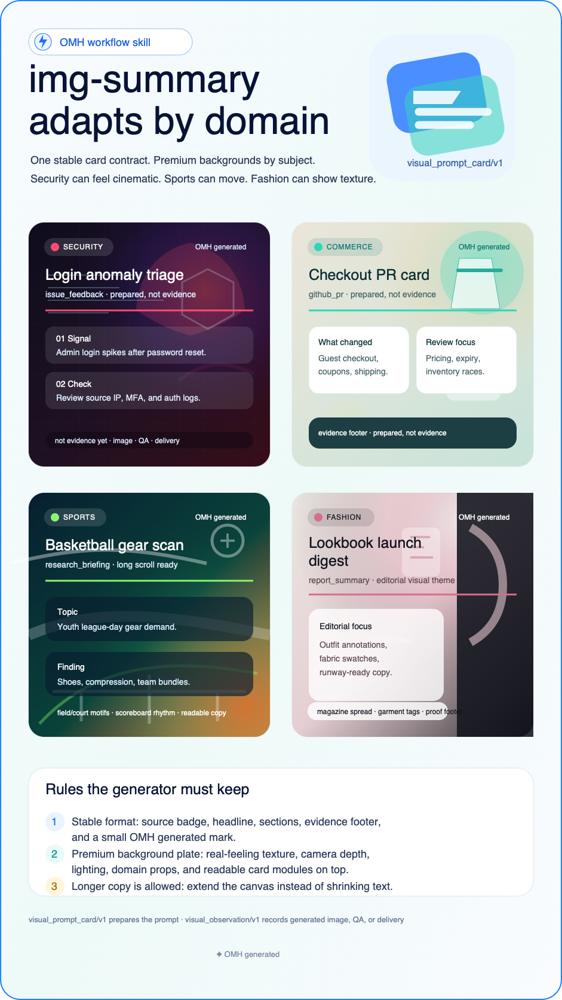

Documentation
Install once, then keep working in Hermes.
Most people will not study every page before trying the tool. OMH
is designed so the first install keeps Hermes chat-first while this
documentation remains the operating map for setup repair, workflow
contracts, wrapper status, and conservative evidence boundaries.
The flagship request-to-handoff path turns a plain
Hermes request into a responsible role, a next action, and a clear
prepared-vs-observed boundary without making backend CLI commands
the normal user experience.
Flagship command-set families
These are the representative OMH lanes to show first when introducing the product: the new Loop flagship, intent shaping, non-coding product operations, source-aware image generation prep, and executor-ready implementation handoff.
Loop!
Loop turns a large goal into a repeating Hermes-native cycle: interview, research, plan, runtime tick queue, handoff, feedback, wait, and resume. It gives wrappers a visible control plane without pretending background work already happened.

Source-specific image cards
img-summary prepares visual_prompt_card/v1
payloads for meetings, reports, PRs, issues, research, and
release notes. Source kind sets the information structure,
domain sets the scene, and poster_archetype/v1 sets visual
grammar such as cinematic key art, technical brutalist, sports
event, or luxury lookbook. A connected image tool does the
generation; OMH offers image_generation_setup/v1 when no
generator is connected and records visual_observation/v1 only
after the image step is observed.

These 10 modes are the public starting point. The full reference remains below for every generated workflow, wrapper contract, and local artifact shape.
Compact intent-to-plan discovery still includes
deep-interview / ralplan /
ultragoal / loop / ultraprocess.
Deep Interview
Clarify the missing decision before planning.
Best for vague product, research, or coding requests.deep-interview
Reviewed plan
Ralplan
Plan from facts, sources, risks, and verification.
Best for architecture, risk, and serious implementation plans.ralplan
Durable goal
Ultragoal
Give ambitious work checkpoints and completion gates.
Best when progress needs a durable trail.ultragoal
One-cycle delivery
Ultra Process
Research -> plan -> implementation path -> review -> sync.
Best for one PR-ready delivery cycle.ultraprocess
Loop
Loop
Research, plan, handoff, feedback, repeat.
Best when the next right move must be discovered.loop
Live evidence
Web Research
Current research with source-backed evidence.
Best for market, docs, competitor, and best-practice questions.web-research
Paper study
Paper Learning
Explain a paper by level without dropping sections.
Best for very easy, moderate, or expert study.paper-learning
Source intake
Source Finder
Find papers, datasets, repos, docs, and public decks.
Best before research or synthesis starts.source-finder
Coding handoff
Idea To Deploy
Scoped coding handoff with verification shape.
Best for Codex, Claude Code, Hermes, or another runtime.idea-to-deploy
Improve the workflow
Workflow Learning
Trace weak routes into evals and patch proposals.
Best after a missed or weak workflow.workflow-learning
Install
Start with the OMH bootstrap path when you want the `omh` command, generated managed skills, local doctor checks, and wrapper/backend commands in the same runtime. The installer uses an isolated OMH virtual environment by default, then links the command into a user bin directory when possible.
curl -fsSL https://raw.githubusercontent.com/rlaope/oh-my-hermes/main/install.sh | sh
omh setup
omh doctor
Operators who need a plugin payload can run
omh setup --with-plugin. Skills remain the default UX;
the plugin only adds local status context after Hermes enables and
loads it.
When Hermes skill taps are available, the native skill front door is:
hermes skills tap add rlaope/oh-my-hermes
hermes skills install rlaope/oh-my-hermes/skills/oh-my-hermes --yes
Stable installs are pinned explicitly with a released tag.
curl -fsSL https://raw.githubusercontent.com/rlaope/oh-my-hermes/main/install.sh | OMH_CHANNEL=stable OMH_VERSION=<version> sh
Rerun the installer for preview command-package updates before the
next tag. When release automation knows the commit, pass
OMH_SOURCE_REF=main@<sha> so OMH can record the
movement in ~/.omh/runtime/state.json.
curl -fsSL https://raw.githubusercontent.com/rlaope/oh-my-hermes/main/install.sh | OMH_SOURCE_REF=main@<sha> sh
Chat wrappers
Wrappers own platform-specific work: Discord or Slack auth, incoming events, buttons, threads, edits, and notifications. Hermes owns the chat experience; OMH owns the deterministic backend response contract when a wrapper needs renderable state for business workflows, planning, status, or handoff UX.
plugin tool: omh_interact
omh chat interact --source discord "risky refactor"
omh chat interact --source slack "diagnose installation health"
omh chat interact --source discord --summary "risky refactor"
omh chat route --source discord --summary "risky refactor"
omh_interact is the plugin-native path: it returns the
same chat envelope and records a metadata-only wrapper session with
producer provenance. The CLI examples are adapter backend
equivalents. The chat interact --summary and
chat route --summary forms are for operator
inspection; wrappers should keep using the JSON envelopes or plugin
tool output. Fixture-backed examples cover both shell-free workflow
picker responses and plugin-produced planning cards. A response can be
an answer, a clarification request, policy-specific workflow
guidance for research, strategy, feedback triage, meeting prep, a
plan, a status card, or a prepared handoff. The wrapper should
render that response natively instead of asking users to memorize
CLI commands.
Hermes Agent Integration Runbook
Operators should treat OMH as the local contract layer consumed by a Hermes Agent chat surface. The runbook explains which fields to render, which owner is responsible for each transition, and which claims are still not evidence.
- Hermes Agent owns the user-visible chat flow, actions, and status narration.
- OMH owns deterministic contracts, fixture examples, prepared handoffs, and status boundaries.
- Codex-like executors own implementation evidence only after dispatch is observed.
Read the source runbook at
docs/HERMES_AGENT_INTEGRATION_RUNBOOK.md and validate the matching
golden fixtures at examples/wrapper-golden/hermes-agent-integration.json
and examples/wrapper-golden/plugin-interact.json.
Responsibility roles are described in docs/ROLES.md;
agent-facing installation is described in INSTALL_FOR_AGENTS.md.
Local demo
Use the deterministic orchestration demo to inspect the full Hermes chat path.
omh demo orchestration
uv run python examples/discord-adapter-shim.py
uv run python examples/slack-adapter-shim.py
The demo and shims are fixture-backed examples of the local OMH contract.
Architecture at a glance
OMH starts as installed Hermes skills. Wrapper backends can consume deterministic local contracts while Hermes stays responsible for conversation, planning, and status narration.
For a broader product-facing explanation of Hermes Agent memory, skills, messenger gateway, cron, plugin surfaces, learning loops, and OMH's evidence boundary, read the bilingual visual guide.
Open architecture guidePrepared handoff is only a ready-to-dispatch state. Execution, verification, review, CI, and merge readiness stay separate until runtime evidence is observed.
Playbooks
Playbooks sit above individual skills. Hermes users should not run them directly; wrappers and maintainers can inspect situation-level pipelines for source-backed research, research-to-strategy briefs, meeting prep, feedback triage, weekly ops review, deep interview to plan, scheduled ops blueprints, safe coding handoff, local pipeline buildout, and release-readiness review.
omh playbook list
omh playbook inspect request-to-handoff
omh playbook recommend "I want to safely add a feature to this repo"
omh playbook recommend "prepare weekly ops review from customer feedback and release risks"
omh playbook recommend "every morning check competitor news and send a Slack digest only if something changed"
Use playbooks when wrappers need to know which stages stay with Hermes, which stages become executor handoffs, and which claims are not evidence until runtime observations exist.
omh runtime team-readiness
Use team readiness before showing Hermes team or swarm actions. It exposes worker protocol, runtime templates, wrapper actions, and the current observation ledger without claiming a worker already ran.
Role surface
Roles are responsibility descriptors for Hermes chat and wrapper UI.
They do not claim that a hidden worker ran. In the
request-to-handoff path, Hermes can name the role that
owns the next action before any execution evidence exists.
guide
Owns first-touch routing, route explanation, and the next visible Hermes action.
researcher
Owns source-backed discovery, confidence, inference, and unknowns.
planner
Owns clarification, non-goals, acceptance criteria, and plan acceptance.
operator
Owns product, company, meeting, material, and scheduled operations workflows.
memory-keeper
Owns context review and safe memory update handoffs.
handoff-guide
Owns executor choice and prepared handoff payloads while executors own code changes.
tracker
Owns runtime status, tool readiness, and missing-evidence narration.
reviewer
Owns findings, release-readiness, QA framing, and fix evidence requirements.
Read the full responsibility contract in docs/ROLES.md.
Discord-style response
The fixture-backed Discord shim renders a natural feature request as a Hermes Agent plan response with wrapper-native actions and explicit evidence boundaries.
Hermes can show the responsible role and next action before any handoff or implementation claim exists.
- ready Routing
- ready Role
- pending Plan acceptance
- pending Executor choice
- pending Handoff
- pending Execution
- pending CI
Prepared handoff becomes available only after acceptance and executor selection.
This panel combines the local request-to-handoff
recommendation with the fixture output from
uv run python examples/discord-adapter-shim.py.
Grounded operator cases
The application cases include twenty-eight natural-language messages
evaluated through the same deterministic local contracts behind
plugin omh_interact, omh chat interact, omh playbook recommend,
and omh coding delegate. They lock the intended user
experience: route, plan, clarify, QA, review, or handoff preparation
without overclaiming execution.
Reproduce the contract-compliance score gate with
omh demo grounded-score --summary for an operator-readable
rollup, or omh demo grounded-score --json for the full
machine-readable payload. The default command still emits JSON for
wrapper compatibility. A case reaches
10/10 only when route, response kind, next action,
playbook confidence, and evidence boundary all match; execution,
review, CI, and merge never count unless observed.
Export the wrapper-facing G1-G10 card set with
omh cases demo --all --json. Each card uses
omh_use_case_demo_card/v1 and keeps route, action,
and evidence state in one deterministic payload.
Guard the visible chat-card surface with
omh demo chat-card-coverage --summary. It checks the
high-signal workflow routes that should render dedicated cards,
verifies that generic ack responses are not leaking
into the user-facing path, and keeps the result bounded to local
wrapper-contract coverage.
Check the Hermes-awareness side with
omh demo route-hint-alignment --summary. It confirms
that every grounded-score and chat-card scenario also produces a
primary omh_route_hint/v1 workflow matching the router
choice, so wrappers do not receive a correct route but a misleading
plugin hint.
Check the full public story with omh cases readiness --json.
It rolls catalog, demo cards, prepared artifacts, replay fixtures,
and optional local artifact-store state into one readiness card.
Before a release, run omh release product-readiness --version 1.0.1 --json.
It combines skill content, G1-G10 readiness, grounded routing score,
chat-card coverage, route-hint alignment, routing precision,
Hermes UX quality, parity contracts, and release checklist shape
without claiming live Hermes chat or executor evidence.
To attach local deterministic proof to a release PR or note, run
omh release evidence-bundle --version 1.0.1 --write --json.
The bundle records local package evidence while CI, live Hermes smoke,
review, merge, and publication remain separately observed gates.
Payment failures and issue-to-PR requests.
Route to feedback-triage or ralplan before Codex handoff.
Cloudy QA and onboarding shaping.
Route to ultraqa or deep-interview and keep handoff unavailable.
Release trust, material packages, and AI coding safety audits.
Route to code-review or materials-package and preserve prepared versus observed status.
Personal and agency operating templates.
Use local-pipeline-buildout to standardize repeatable wrapper work.
Idea, CTO, deploy, and monitor loops.
Use app-operation playbooks without pretending deploy or monitoring already happened.
Loop and ultraprocess invocations.
Direct ./loop and $ultraprocess routes are scored without playbook forcing.
Read the full matrix in docs/APPLICATION_CASES.md.
Contracts
chat_interaction/v1
Input/output envelope for natural messages, source metadata, thread context, user intent, and plugin-recorded wrapper sessions.
chat_response/v1
Output envelope for wrapper-facing text, action hints, status snippets, and handoff prompts.
status_card/v1
Readable status summary for plan, dispatch, implementation, review, CI, and merge readiness.
harness_progress/v1
Evidence-based progress ladder that advances only when required observations are present.
workflow_learning_review_queue/v1
Human-review queue for learning traces, candidates, regression gaps, and non-applying patch proposals.
Delegation-first coding
OMH does not hide a coding executor inside Hermes. Coding-heavy requests are shaped into prepared handoffs for selected executors/runtimes with scope, acceptance criteria, verification commands, review expectations, prompt-only fallback guidance, Codex $skill invocation guidance when Codex is selected, and merge-readiness evidence.
- Prepared handoff means "ready to dispatch", not "work completed".
- Observed implementation requires linked runtime evidence.
- Review, CI, and merge-readiness require explicit observed records.
Quality gates
OMH keeps skill and harness metadata inspectable through the CLI so wrappers and operators can validate contract coverage before depending on it.
omh docs workflows --json
omh harness list
omh harness inspect planning
omh harness validate
omh demo grounded-score --summary
omh demo chat-card-coverage --summary
omh demo route-hint-alignment --summary
Boundaries
OMH is deterministic local tooling. It does not patch Hermes core, run platform bots, call LLM APIs, create network integrations inside core commands, or launch coding executors by itself. Those responsibilities stay explicit at the wrapper, executor, or operator layer.
For source files, release notes, and contribution workflow, use the repository after you understand the public contract from this page.